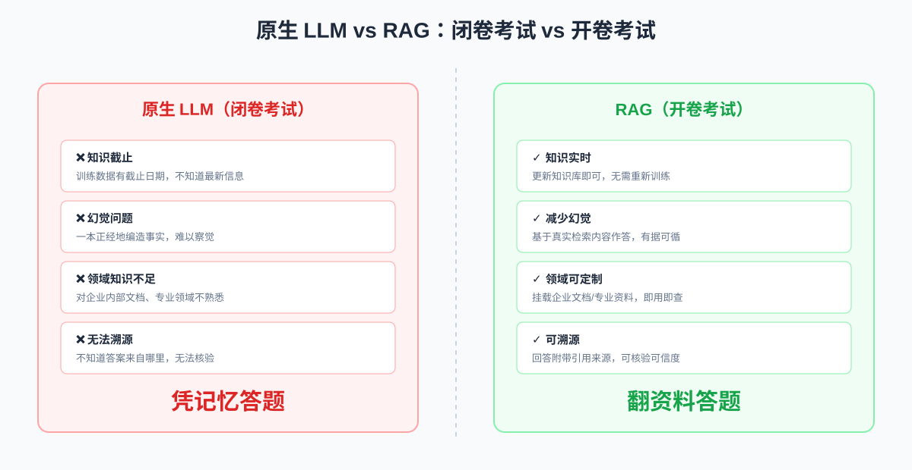
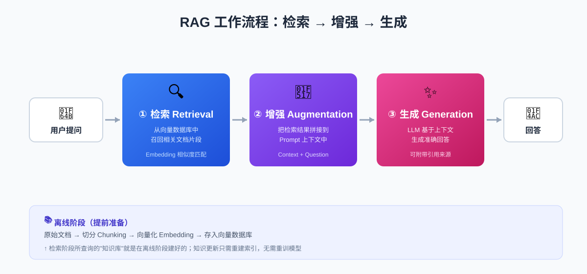
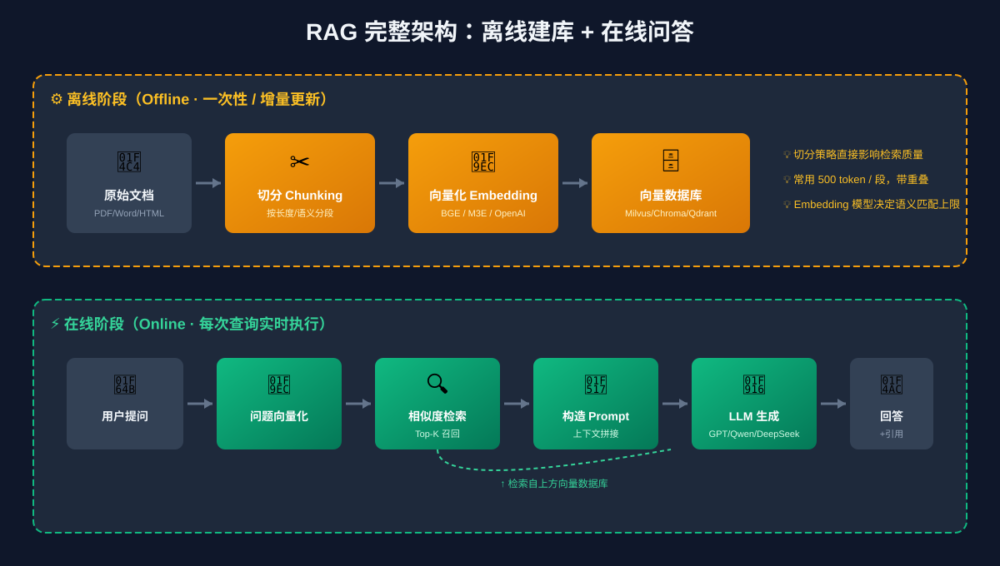
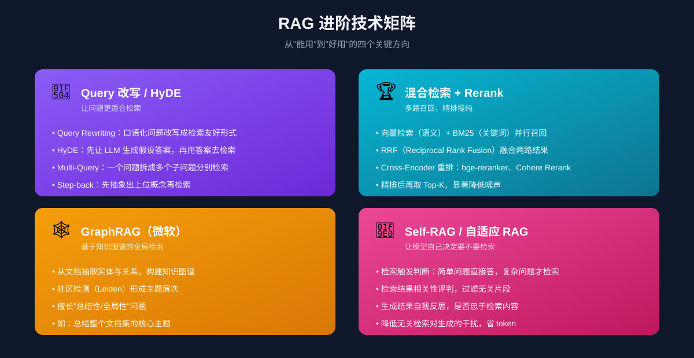
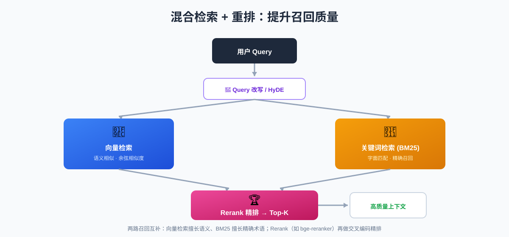
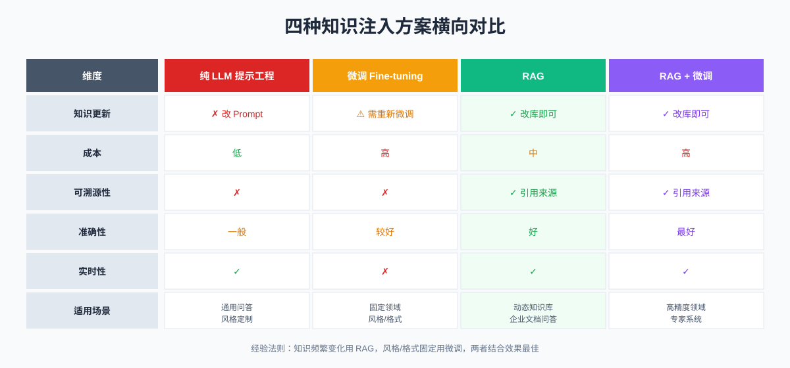

RAG 技术全景：让大模型从"闭卷考试"到"开卷考试"
大模型很强，但它会"一本正经地胡说八道"。RAG（Retrieval-Augmented Generation，检索增强生成）给大模型外挂了一个"知识库"，让它从闭卷考试变成开卷考试，回答既准又能溯源。本文用 6 张图带你完整搞懂 RAG。
一、先聊痛点：大模型的"幻觉"从哪来？
你大概遇到过这样的场景：问 GPT 一个公司内部的政策问题，或者让它总结一份最新发布的财报，它信誓旦旦地给你一段听起来很专业的回答——但仔细一查，全是编的。
这就是大模型的幻觉（Hallucination）。它不是故意的，而是由其工作方式决定的：LLM 本质上是在做"下一个 token 预测"，它根据训练时记住的概率分布生成文本，分不清"知道"和"不知道"。
原生 LLM 在企业级场景下有四个硬伤：
- 知识截止：训练数据有截止日期，不知道今天发生的事
- 幻觉问题：没见过的知识就靠"编"，还很自信
- 领域知识不足：对企业内部文档、专业细分领域不熟悉
- 无法溯源：回答不知道来自哪里，没法核验
要解决这些问题，传统思路是微调（Fine-tuning）——用领域数据重新训练模型。但微调又贵又慢，而且知识一更新就得再来一遍。
RAG 给了另一条路：不重新训练模型，而是给它外挂一个可随时更新的知识库，回答时先去知识库里检索，再基于检索到的内容作答。

原生 LLM vs RAG：闭卷考试 vs 开卷考试就像考试一样：原生 LLM 是闭卷考试，全凭记忆，记不清就编；RAG 是开卷考试，遇到不会的可以翻书，答案有据可循。
二、RAG 是什么：核心思想一句话
RAG = 检索（Retrieval）+ 增强（Augmentation）+ 生成（Generation）
在 LLM 生成回答之前，先从外部知识库中检索相关资料，把这些资料增强到 Prompt 里作为上下文，再让 LLM 基于这些上下文生成回答。
用一句话概括：RAG 让 LLM 从"闭卷考试"变成"开卷考试"。
它和微调的根本区别在于：微调把知识"烧进"模型权重里，RAG 把知识放在模型之外的数据库里，用的时候现查。这也决定了两者的适用边界——后面会详细对比。
三、RAG 工作流程：三阶段详解

RAG 工作流程：检索 → 增强 → 生成RAG 的完整流程可以拆成离线建库和在线问答两大阶段。在线问答又分为检索、增强、生成三步。
3.1 离线阶段：把文档变成可检索的向量库
这一步是"建图书馆"的过程，通常一次性完成，知识更新时增量重建：
- 文档加载：读取 PDF、Word、HTML、Markdown 等原始文档
- 切分（Chunking）：把长文档切成小段。为什么不整篇存？因为检索时要找最相关的片段，整篇文档向量会"稀释"语义；而且 LLM 上下文有限，塞不下整篇
- 向量化（Embedding）：用嵌入模型把每段文本转成一个高维向量（通常 768~1536 维），语义相近的文本在向量空间里距离也近
- 存入向量数据库：把向量和原文一起存进去，建好索引，供后续快速检索
3.2 在线阶段：检索 → 增强 → 生成
用户每一次提问，都会实时跑这三步：
① 检索 Retrieval
- 把用户问题用同一个 Embedding 模型转成向量
- 在向量数据库中做相似度检索（通常用余弦相似度），召回 Top-K（一般 3~10 条）最相关的文档片段
② 增强 Augmentation
- 把检索到的片段拼到 Prompt 模板里，作为上下文
- 一个典型的 Prompt 长这样：
|
|
③ 生成 Generation
- 把拼好的 Prompt 喂给 LLM，生成最终回答
- 可以要求模型在回答中标注引用来源，实现可溯源
四、完整架构图

RAG 完整架构：离线建库 + 在线问答这张图把离线和在线两条流水线放在了一起。注意几个关键点：
- Embedding 模型必须一致：离线建库用哪个模型，在线检索时也要用同一个，否则向量空间不兼容
- 知识更新无需重训模型：新增文档只需走一遍"切分 → 向量化 → 入库"，模型权重完全不动
- 检索质量是 RAG 的命门：如果第一步召回的片段就不相关，后面 LLM 再强也答不好
五、核心组件选型
RAG 系统由四个核心组件构成，选型直接影响效果：
| 组件 | 作用 | 常见选型 |
|---|---|---|
| Embedding 模型 | 文本转向量，决定语义匹配上限 | BGE（智源）、M3E、OpenAI text-embedding-3、Cohere、bge-m3 |
| 向量数据库 | 存储与检索向量 | Milvus、Qdrant、Chroma、Pinecone、FAISS、Weaviate |
| LLM | 基于上下文生成回答 | GPT-4、Claude、Qwen、DeepSeek、Llama、GLM |
| 编排框架 | 串联整个流程 | LangChain、LlamaIndex、Haystack、DSPy |
几个选型经验：
- 中文场景：Embedding 优先考虑
bge-large-zh或bge-m3，比 OpenAI 的英文模型在中文检索上更准 - 轻量起步：向量库用 Chroma（纯 Python，单机嵌入式）跑通流程，量大了再换 Milvus / Qdrant
- 框架选择：快速原型用 LangChain，文档密集型场景用 LlamaIndex（它对文档处理和索引抽象更细致）
六、进阶技术：从"能用"到"好用"
朴素 RAG（一次向量检索 + 拼 Prompt）能跑通，但效果往往一般。真正生产级的 RAG 通常会在四个方向上做增强：

RAG 进阶技术矩阵6.1 Query 改写（让问题更适合检索）
用户的问题往往是口语化、模糊的，直接拿去检索效果差。常见技巧：
- Query Rewriting：让 LLM 把"那个东西怎么用"改写成"产品 X 的使用方法"
- HyDE（Hypothetical Document Embeddings）：先让 LLM 生成一个假设性答案，再用这个答案的向量去检索——因为"答案"和"答案"的语义比"问题"和"答案"更接近
- Multi-Query：把一个问题拆成多个子问题分别检索，结果合并去重
- Step-back Prompting：先抽象出上位概念再检索，比如"2024 年诺贝尔物理学奖得主"先退到"诺贝尔物理学奖近年得主"
6.2 混合检索 + Rerank（多路召回，精排提纯）

混合检索 + 重排：提升召回质量单靠向量检索有个问题：它擅长语义匹配，但对专有名词、产品型号、人名这种精确字面匹配反而不如传统检索。所以生产系统通常用混合检索：
- 向量检索（语义）+ BM25 关键词检索（字面）并行召回
- 用 RRF（Reciprocal Rank Fusion） 融合两路结果
- 再用 Cross-Encoder 重排模型（如
bge-reranker-large、Cohere Rerank）对召回结果做精排 - 最后取 Top-K 喂给 LLM
Rerank 的关键区别：Embedding 是把 query 和 doc 分别编码再算相似度（双塔），而 Cross-Encoder 是把 query 和 doc 拼一起送进模型（交叉编码），精度高得多，但速度慢——所以先用向量检索粗筛，再用 Rerank 精排，兼顾速度和精度。
6.3 GraphRAG：基于知识图谱的全局检索
微软 2024 年提出的 GraphRAG 解决的是朴素 RAG 的另一个痛点：局部性。向量检索只能召回和问题相似的片段，回答不了"总结整个文档集的核心主题"这种全局性问题。
GraphRAG 的做法：
- 用 LLM 从文档中抽取实体和关系，构建知识图谱
- 用社区检测算法（如 Leiden）把图谱分成主题层次化的社区
- 为每个社区生成摘要
- 查询时根据问题粒度选择社区摘要或具体节点回答
它特别适合"全局性总结"“跨文档推理"类问题，代价是建图成本高、更新麻烦。
6.4 Self-RAG / 自适应 RAG：让模型自己决定要不要检索
不是每个问题都需要检索——“1+1 等于几"还去查库就浪费了。Self-RAG 让模型学会自我反思：
- 是否检索：判断问题是否需要外部知识，简单问题直接答
- 检索结果是否相关：过滤掉无关片段
- 生成是否忠于检索：检查答案有没有脱离资料编造
好处是省 token、降延迟，坏处是需要训练模型学会这些判断（或用 prompt 模拟），实现复杂度高。
七、方案对比：RAG vs 微调 vs 长上下文

四种知识注入方案横向对比随着模型上下文窗口越来越长（Claude 200K、Gemini 1M、GPT-4o 128K），有人质疑 RAG 是不是过时了——直接把所有文档塞进上下文不就行了？
实际并非如此，三者各有定位：
- 长上下文：贵（按 token 计费）、易"迷失在中间”（Lost in the Middle 现象）、不可溯源。适合一次性分析单份长文档
- RAG：经济、可扩展到海量文档、可溯源。适合知识库问答
- 微调：改变模型行为/风格，而非注入事实知识。适合固定格式输出、领域术语适配
- RAG + 微调：效果最好，成本最高，用于高精度专业场景
经验法则：知识频繁变化 → RAG；风格/格式固定 → 微调；两者都要 → 结合用。
八、实战：用 LangChain 跑通一个最小 RAG
理论讲完，来看一段能跑的代码。用 LangChain + Chroma + OpenAI 实现 30 行的 RAG：
|
|
这段代码虽然简单，但已经包含了 RAG 的所有核心环节。生产化时再把 Embedding 换成 BGE、加上 Rerank、换成 Milvus，骨架不变。
九、常见挑战与优化方向
实际落地 RAG，踩坑往往不在模型，而在检索。下面是常见问题对应的优化手段：
| 症状 | 根因 | 优化方向 |
|---|---|---|
| 检索结果不相关 | Query 与文档语义差距大 | Query 改写、换更强的 Embedding |
| 召回准确但答非所问 | 片段顺序/噪声干扰 | 加 Rerank 精排、调 Top-K |
| 答案不忠于资料 | LLM 忽略上下文编造 | Prompt 加约束、降 temperature、强制引用 |
| 专有名词召回差 | 纯向量检索短板 | 加 BM25 混合检索 |
| 上下文超长 | 召回太多塞不下 | 上下文压缩、LongLLMLingua、换长上下文模型 |
| 知识更新延迟 | 索引重建慢 | 增量索引、流式更新 |
| 答案无法溯源 | 未保留片段来源 | 检索结果带 metadata，Prompt 要求标注引用 |
一个经验：80% 的 RAG 优化工作都在检索阶段，而不是生成阶段。先把检索做准，效果立刻提升一大截。
十、典型应用场景
- 企业知识问答：基于内部 Wiki、手册、合同的智能客服与员工助手
- 法律/医疗咨询：基于法条、判例、药品说明、病历的精准问答
- 代码助手：基于私有代码库的代码生成（Cursor、Copilot Workspace 都用了 RAG 思想）
- 教育辅导：基于教材的个性化答疑，答案可指向课本页码
- 智能搜索：搜索引擎的 AI 摘要（Perplexity、Bing Chat、Google AI Overviews）
- 数据分析：Text-to-SQL，基于数据库 schema 的自然语言查询
总结
RAG 不是某个具体工具，而是一种 “把外部知识检索和大模型生成结合起来” 的架构思想。它的价值在于：让大模型能用最新、最准、可溯源的外部知识来回答问题，而无需重新训练。
回顾本文要点：
- 核心思想：检索 → 增强 → 生成，让 LLM 从闭卷变开卷
- 两大阶段：离线建库（切分+向量化+入库）+ 在线问答（检索+增强+生成）
- 命门在检索：80% 的优化工作都在检索阶段
- 进阶四件套：Query 改写、混合检索+Rerank、GraphRAG、Self-RAG
- 方案选择：知识频繁变化用 RAG，风格固定用微调，高精度场景结合使用
随着模型上下文窗口变长、多模态能力增强，RAG 的形态还在演进（比如多模态 RAG、Agentic RAG），但"外挂知识库"这个核心思想短期内不会过时——毕竟，开卷考试永远比背书更可靠。
如果你对其中某个环节（比如向量数据库选型、Embedding 微调、GraphRAG 实现）想深入，欢迎在评论区交流。